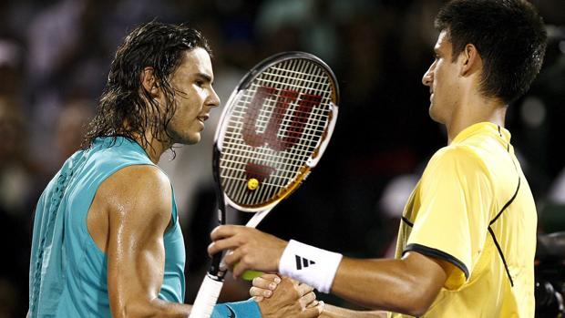
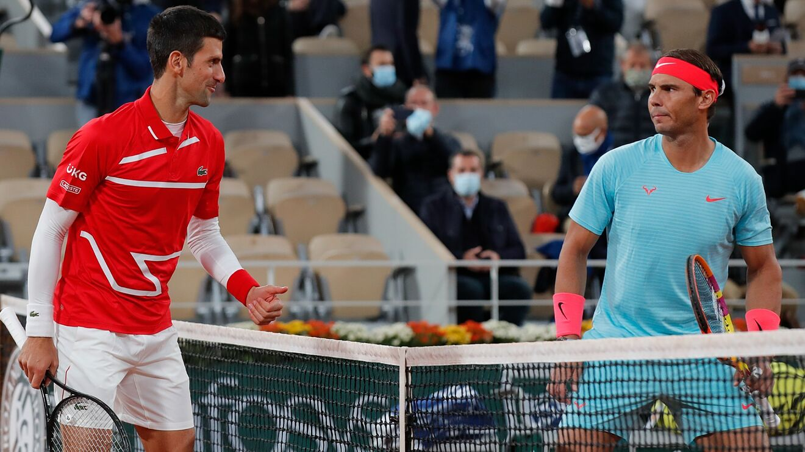
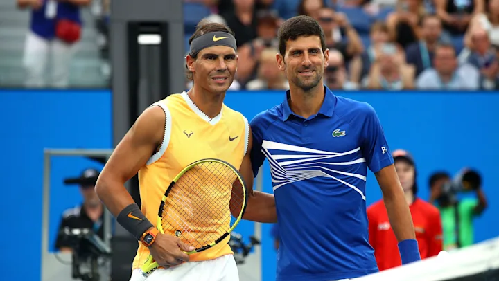

Está considerada como una de las mayores rivalidades de la historia del deporte y la mayor de la Era
Abierta.
Sus enfrentamientos se han producido en todas las categorías del tenis profesional: Grand Slam, Juegos
Olímpicos, Masters Cup, Masters 1000, ATP 500, ATP 250, Copa Davis y Copa ATP. La rivalidad se alarga en el
tiempo desde 2006 hasta 2022, convirtiendo esos 16 años en la rivalidad más longeva de la Era Abierta. Se
han enfrentado en, al menos, 18 torneos diferentes, siendo en Roland Garros donde más se ha enfrentado, diez
en concreto, con un balance favorable a Nadal de 8-2. La superficie donde más ocasiones se han enfrentado es
en arcilla donde es el español quien lidera el cara a cara por 20-8. Con esto dicho es importante señalar
que 3 veces se enfrentaron en las 3 superficies en un mismo año (2007, 2008 y 2011). Asimismo, en 2007 se
enfrentaron en las 3 superficies más la dura indoor.

Hasta la fecha, se han visto las caras en 59 ocasiones (récord en la Era Abierta), con un balance de 30
victorias para Djokovic y 29 para Nadal. En finales, el balance también es favorable al serbio, al haber
vencido en 15 de ellas mientras que Nadal venció en 13.2 Adicionalmente, ambos jugadores son los que más
vencieron al otro. Además, es importante destacar que la primera parte de la rivalidad (2006-2010) fue
ampliamente dominada por el español 16-7. Por otra parte, la segunda (2011-2016), Djokovic dominó aún más
19-7. Asimismo, la tercera parte, desde 2017 hasta la actualidad, cuando la cantidad de enfrentamientos por
año disminuyó, ha estado apretada, con Nadal liderando 6-4, si bien toca destacar que todas sus victorias
fueron en arcilla, mientras que el serbio sí le ganó en las 3 superficies y en Grand Slam (Wimbledon 2018,
Australia 2019 y Roland Garros 2021). Del mismo modo, si se contabiliza solamente las veces que uno le ganó
al otro que era número 1, el récord queda igualado 10-10.
De todos sus enfrentamientos, 18 fueron en torneos de Grand Slam, récord absoluto. El cara a cara de estos
partidos es favorable a Nadal por 11-7; e incluyendo las finales, el español gana por 5-4. Ambos poseen el
récord de disputar cuatro finales consecutivas de Grand Slam: Wimbledon 2011, Abierto de EE.UU. 2011,
Australia 2012 y Roland Garros 2012. También poseen el récord de ser la única rivalidad de la historia que
se ha enfrentado en las cuatro finales de Grand Slam. De sus 18 enfrentamientos, 3 de ellos llegaron al
quinto set: la final de Australia 2012; y las semifinales de Roland Garros 2013 y Wimbledon 2018.
En las ATP Finals se han visto las caras en cinco ocasiones, con un balance favorable al serbio por 3-2: en
2007, 2009, 2010, 2013 y 2015. Cabe destacar el enfrentamiento en la final que se produjo en 2013 y que
venció el serbio en dos sets. En torneos Masters 1000 se ha enfrentado en 14 finales con un balance de 7-7.
En competiciones por países se vieron las caras en las semifinales de los Juegos Olímpicos de Pekín 2008,
donde venció el español en un apretado partido de tres sets, y en los octavos de final de la Copa Davis en
2009, donde también venció el balear en tres contundentes sets. Por último y hasta la fecha, su último
enfrentamiento en competiciones por países se dio en la ATP Cup en 2020, partido que resolvió el serbio a su
favor en dos sets.

- Nadal es el jugador con más Grand Slam (22); Djokovic es segundo con 21.
- Nadal y Djokovic son los únicos jugadores en la Era Abierta en ganar al menos 2 veces los 4 torneos
de Grand Slam
- Partido más jugado en torneos de Grand Slam con 18.
- Final de Grand Slam más larga en la Era Open (en el Abierto de Australia 2012 con 5 horas y 53
minutos).
- Único par masculino en la historia de la Era Abierta que se ha enfrentado en cuatro finales
consecutivas de Grand Slam (desde Wimbledon 2011 a Roland Garros 2012).
- Djokovic y Nadal tienen los récords en su torneo de Grand Slam más ganado. Nadal tiene el récord
histórico de 14 títulos del Abierto de Francia y Djokovic 9 títulos en el Abierto de Australia. Ambos
jugadores tienen un registro del 100% en finales.
- Djokovic, único jugador en ganarle a Nadal en todos los Grand Slams.
- Nadal impidió que Djokovic completara el Grand Slam en carrera venciéndolo en Roland Garros en 2012,
2013 y 2014.
- Nadal es el único que ha logrado el Clay Slam: los 3 Masters 1000 en polvo de ladrillo más Roland
Garros en un mismo año; (2010).Nadal impidió que Djokovic ganara el oro olímpico al vencerlo en las
semifinales de Pekín 2008. Asimismo, el español es junto a Agassi uno de los 2 jugadores que ha logrado
el Golden Slam.
- Nadal impidió que Djokovic ganara el oro olímpico al vencerlo en las semifinales de Pekín 2008.
Asimismo, el español es junto a Agassi uno de los 2 jugadores que ha logrado el Golden Slam.
- Djokovic impidió que Nadal ganara el Torneo de Maestros en 2013 y 2015. De otra forma, el serbio es
el jugador con más títulos en este torneo junto a Federer (6).
- Djokovic es el jugador con más Masters 1000 (38); Nadal es segundo con 36.
- Nadal y Djokovic son 2 de los 4 jugadores que han ganado el doblete Montecarlo-Roma; Nadal lo
consiguió en 7 ocasiones.
- Nadal es uno de los 4 jugadores que han ganado el Doblete Canadá-Cincinnati (2013)
- Djokovic ha impedido que Nadal gane el Masters de Miami en 2011 y 2014.
- Djokovic impidió que Nadal ganara el Masters de París en 2009.
- Djokovic es el único jugador con más de 12 partidos en tener historial favorable frente a Nadal
(30-29).
- Partido más disputado en la Era Open, con 59 partidos. Una de los dos rivalidades con 50 o más
partidos, junto a la rivalidad Federer-Djokovic.

Numerosos comentaristas, ex-jugadores y periodistas deportivos, coinciden en que esta rivalidad tiene el
potencial de ser la mayor rivalidad deportiva en la historia del tenis, debido a la cantidad de partidos que
ya se jugaron entre los dos, la calidad de los mismos y la diferencia de edad de sólo un año.
Muchos expertos concluyen que Djokovic es el único desafío para Nadal en tierra batida,6 teniendo en cuenta
que el suizo Roger Federer ha conseguido vencer al español únicamente dos veces en esta superficie a lo
largo de toda su carrera (véase rivalidad Federer-Nadal). Al finalizar 2010, Nadal contaba en su palmarés
con nueve títulos de Grand Slam y conseguía terminar el año por segunda vez como número 1 del mundo, esto
unido a la cada vez mayor superioridad sobre Federer hizo que muchos pensaran que por fin se daría el relevo
del suizo en el trono del tenis mundial, no sólo por todos los logros que estaba consiguiendo el español, si
no por su juventud y por la existencia de únicamente el suizo como principal rival. Sin embargo, Djokovic
respondió en 2011 con una de las mejores temporadas de la Era Abierta, demostrando sin ninguna duda que
estaba a la altura de Nadal y de Federer. Desde entonces y hasta la actualidad, la rivalidad entre ambos ha
alcanzado dimensiones históricas en el deporte blanco.
El dominio de la rivalidad ha cambiado de un lado a otro en varias ocasiones. En sus diez primeros
enfrentamientos, Nadal lideraba el cara a cara por 7-3, el serbio no fue capaz de vencer al español hasta el
tercer encuentro que disputaron (cuartos de final del Masters 1000 de Miami de 2007). Al término de 2010, el
español dominaba el balance por un contundente 16-7, destacando las victorias en la final del Masters 1000
de Indian Wells en 2007 y del Masters 1000 de Montecarlo y del Masters 1000 de Roma en 2009, además de la
final del Abierto de Estados Unidos en 2010. A partir de entonces, el serbio venció siete encuentros de
forma consecutiva para situar la serie en 16-14. Djokovic venció de forma consecutiva en las finales de
Indian Wells, Miami, Madrid, Roma, Wimbledon, Abierto de Estados Unidos y Abierto de Australia (éste último
ya en 2012). En 2012 y después de perder la final del Abierto de Australia, Nadal parecía no encontrar
soluciones al juego del serbio, hasta que finalmente fue capaz de derribar el muro impenetrable del
balcánico y en la temporada de tierra batida le endosó tres derrotas consecutivas en las finales del Masters
1000 de Montecarlo, Roma y Roland Garros. De esta forma la serie quedaba 19-14 favorable al español al
término de 2012.
En los años 2020 y 2021, ambos protagonizaron partidos para la historia. En 2020, Nadal igualaba los 20
Grand Slams del suizo Roger Federer al vencer a Djokovic en la final de Roland Garros. Tomándose revancha
por lo sucedido en Australia el año anterior, el español aplastó a Djokovic en tres sets mostrando una
superioridad abrumadora y endosando al serbio en el primer set el único 6-0 que ha sufrido en una final de
Grand Slam. Sin embargo, sería el serbio quien se vengaría de nuevo en 2021, volviendo a derrotar por
segunda vez en su carrera a Nadal en Roland Garros, esta vez en semifinales y en cuatro sets, para,
posteriormente, terminar consiguiendo también su vigésimo Grand Slam, igualando al suizo y al español en lo
más alto del palmarés.
Hasta la fecha, la rivalidad se encuentra en 30-29 favorable al serbio.